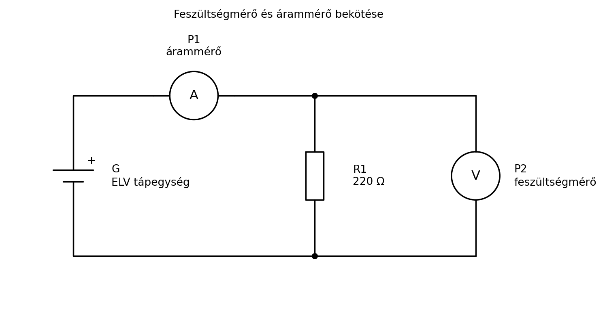
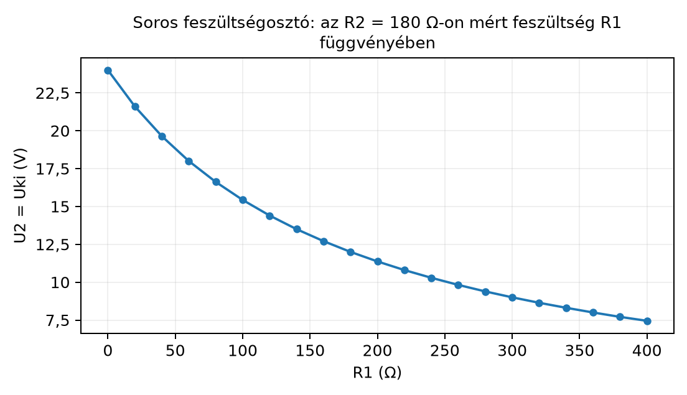

Amikor a tanuló az iskolapadban vagy a tanműhelyben először épít meg egy kapcsolást, két „világ” találkozik: a papíron kiszámolt, ideális áramkör, és a valóságos alkatrészekből álló, kézzelfogható hálózat. A kiszámolt -os ellenállás a valóságban lehet , a vezetéknek is van ellenállása, és a kijelzett feszültség sem mindig pontosan . Az alapmérések gyakorlata azt tanítja meg, hogyan mérjük meg ezt a valóságot, és hogyan vessük össze a számított értékekkel. Ez a készség alapozza meg a későbbi, Védelmi mérések gyakorlata és a jegyzőkönyv kitöltése alfejezetben tárgyalt méréseket, mert aki itt megtanulja a mérőműszer szakszerű bekötését és a mérési jegyzőkönyv logikáját, az a hibavédelmi vizsgálatoknál már nem a műszer használatával fog vesződni, hanem magára a védelmi jellemzőre tud figyelni.
A villamos alapmérés két „szerszáma” a feszültségmérő és az árammérő (általában egy multiméter kétféle üzemmódban). Azt már tudjuk a Multiméter, lakatfogó és mérési kategóriák alfejezetből, hogy hogyan kell őket kiválasztani; most az elvi kapcsolásukat rakjuk össze.

Az ábra lényege: az árammérő (P1) az áram útjába, sorosan van kötve, tehát ugyanaz az áram folyik át rajta, mint a terhelésen. A feszültségmérő (P2) a terhelés két kapcsára van kötve, tehát párhuzamosan. Ez a kép a későbbi összes mérési kapcsolás alapja.
Mielőtt bármit mérünk, meg kell tervezni a mérési elrendezést. A szerelői gyakorlatban ez ritkán jelenti rajzok gyártását, de mindig jelenti a következő kérdés végig gondolását: mit akarok mérni, és milyen fizikai módon „látja” azt a műszer?
Recept. A digitális multiméter (DMM) beállítása alapméréshez:
A recept lépései a műszeren az alábbi ábra szerint követhetők. A kijelző (1) alatt a forgókapcsolóval (2) választjuk ki a mennyiséget és a jelfajtát (V~, V=, Ω, mA, A). A fekete zsinór mindig a COM aljzatba (3) kerül; a piros feszültség- és ellenállásméréshez a VΩ aljzatba (4), áramméréshez a biztosítóval védett mA (5) vagy 10 A (6) aljzatba. A műszer és a zsinórok mérési kategóriája (7) feleljen meg a mérés helyének; a mérőzsinórt (8) az ujjvédőig fogjuk. A rajz a feszültségmérés beállítását mutatja (V=, 24,0 V).
A leggyakoribb hiba, hogy árammérés után a piros zsinór a mA vagy az A aljzatban marad: a következő feszültségmérésnél a műszer rövidre zárja a forrást. A HTML-kiadásban az U, I és R beállítás között váltva látható, hova kerül a forgókapcsoló és a piros zsinór.
Szabály. Feszültségmérés párhuzamosan. A feszültségmérő belső ellenállása nagy, ezért a mért alkatrész vagy hálózatrész kapcsaira kötjük. A rajzon a műszer a mért elem két kapcsa közé, azzal párhuzamos ágba kerül.
Szabály. Árammérés sorosan. Az árammérő belső ellenállása kicsi, ezért az áram útjába kell kötni, mintha egy vezeték lenne. A kört meg kell bontani, és a műszert a két megbontott pont közé kell iktatni.
Miért így? Ha egy árammérőt (egy kis belső ellenállású alkatrészt) párhuzamosan kötnénk a feszültségforrásra, az rövidzárat okozna: a kis ellenállás miatt a forrás maximális árama folyna át rajta, tönkretéve a műszert és a forrást is. Ha egy feszültségmérőt (nagy belső ellenállású alkatrészt) sorosan kötnénk az áramkörbe, az lefojtaná az áramot, és a mérési pont hamis értéket mutatna.
Az ellenállások kapcsolásáról tanultakat itt használjuk fel, de most a mérőműszer bekötése a hangsúly. A mérés célja nem a képlet bemagolása, hanem az, hogy a tanuló lássa: a műszer által mutatott értékek milyen kapcsolatban vannak a kapcsolás törvényeivel.
Vegyünk egy ELV tápegységet, és két sorosan kapcsolt ellenállást (, ). A tápegység feszültsége .
Számítás. Adott: , , . Keresett: , , .
A soros eredő ellenállás: Az áramkör árama Ohm törvényéből: Az egyes ellenállásokon eső feszültség (feszültségosztó képlettel is ellenőrizhető): Ellenőrzés: . Ez pontosan megegyezik a bemeneti feszültséggel, tehát a hurokegyenlet teljesül. ∎
Mérés. Az árammérőt a kör bármely pontján sorosan bekötve -t kell mérnünk. A feszültségmérőt előbb , majd kapcsaira téve a kiszámolt -ot és -ot kapjuk. Ha mérjük a bemeneti feszültséget is, annak is körül kell lennie. A soros feszültségosztást egy diagram is jól szemlélteti:

A grafikon azt mutatja, hogy ha értéke nő, a kimeneti feszültség () csökken, mert a feszültségből egyre nagyobb hányadot vesz át .
Most kössük ugyanezt a két ellenállást párhuzamosan (, ), a bemeneti feszültség maradjon .
Számítás. Adott: , , . Keresett: , , .
Párhuzamos kapcsolásnál a feszültség mindkét ágon azonos, ezért: Ellenőrzés. A párhuzamos eredő ellenállás: A két úton kapott eredmény megegyezik. ∎
Figyelem. Az ellenállások hőteljesítménye is számít: a 120 Ω-os ágon (a 180 Ω-os ágon ); ehhez legalább 5 W-os, inkább 10 W-os ellenállás kell, mert egy 0,25 W-os alkatrész másodpercek alatt túlmelegszik és égési sérülést okozhat. Mérés közben ne érintsd az ellenállásokat.
Mérés. A feszültségmérőt bárhová kötjük, -ot mérünk. Az árammérőt sorosan kötjük először az , majd az ágába, végül a főágba. A mért áramoknak , és körül kell alakulniuk. A főági áram mérésekor az árammérőt a tápegység és az elágazási pont közé kötjük.
Egy vegyes kapcsolásban sorosan van, és párhuzamosan. Legyen , , , .
Számítás. Adott: , , , . Keresett: , , , , .
Először az és párhuzamos eredőjét számoljuk: A teljes soros eredő: A főági áram: Az -en eső feszültség: A párhuzamos részen eső feszültség: Az ágáramok: Ellenőrzés: . A csomóponti törvény teljesül. ∎
Mérés. A feszültségmérővel három ponton mérünk: a bemeneten (), -en () és a párhuzamos részen (). Az árammérőt sorosan kötjük be a főágba, majd az egyes ágakba. Vegyes kapcsolásnál figyelni kell arra, hogy az árammérő az adott ágban mérjen, ne a főágban, mert akkor rossz értéket kapunk.
A mérési gyakorlatokban a teljesítményt gyakran nem közvetlenül wattmérővel, hanem közvetett úton, feszültség- és árammérés eredményéből számítjuk. Egyenáramú körben és tiszta ohmos váltakozó áramú körben a hatásos teljesítmény: ahol a teljesítmény wattban (), a feszültség voltban (), az áram amperben ().
Hatásfok mérése. A gyakorlatban a hatásfokot () a leadott és a felvett teljesítmény hányadosaként értékeljük: Kidolgozott példa (Hatásfok mérése). Adott: Egy kis tanműhelyi motor egyenáramú tápegységről üzemel. A motor felvett teljesítménye . A motor tengelyén mért leadott mechanikai teljesítmény . Keresett: A motor hatásfoka. Képlet: . Behelyettesítés: . Eredmény: . Ellenőrzés: A -os hatásfok egy kis egyenáramú motornál reális érték. ∎
Váltakozó áramú, induktív vagy kapacitív terhelésnél a teljesítmény képlete , de ezt a könyv váltakozó áramú fejezetei részletesen tárgyalják. A mérés tanműhelyi gyakorlata a következő (elmélet: Teljesítmény- és energiamérés, fogyasztásmérők).
A mérési munka félkész termék, amíg nincs jegyzőkönyv. A jegyzőkönyv rögzíti, mit mértünk, mivel mértük, és milyen következtetést vontunk le. A hibakeresésnél és a későbbi, Védelmi mérések gyakorlata és a jegyzőkönyv kitöltése alfejezetben tárgyalt méréseknél a jegyzőkönyv a bizonyíték arra, hogy a munkát elvégeztük, és a berendezés megfelelt az előírásoknak.
Szabvány. A jegyzőkönyv pontos formai követelményeit a megrendelő, a hatóság vagy az eljáró cég minőségirányítási utasítása határozza meg; a villamos berendezések felülvizsgálatánál ezt a kérdést a szabványos és jogi előírások együttesen rendezik (például az ellenőrző méréseket szabályozó sorozatok). A következő szerkezeti elemeket a hazai gyakorlatban minden mérési jegyzőkönyvnek érdemes tartalmaznia:
A valós alkatrészeknek tűrése van (például az ellenállás -kal térhet el a ráírt értéktől). A műszernek is van pontossági osztálya. Ezért a mért és a számított érték soha nem egyezik meg pontosan. A kettő közötti eltérést hibának nevezzük.
Definíció. Abszolút hiba: a mért és a számított (vagy pontosnak tekintett) érték különbségének abszolút értéke. Definíció. Relatív hiba: az abszolút hiba viszonyítása a tényleges vagy számított értékhez, általában százalékban. Példa. Egy névleges értékű ellenállást mérünk. A multiméter -t mutat. Abszolút hiba: . Relatív hiba: . Ez az érték a szokásos tűréshatáron belül van, tehát a mérést és az alkatrészt is elfogadjuk. ∎
Üres lap: Nyomtatható jegyzőkönyvek és sablonok, A7.
Egy eltérés megítéléséhez az alkatrész tűrése mellett a műszer hibahatárát is ki kell számolni: , ahol 1 digit az utolsó kijelzett helyiérték (lásd Mérés alapjai, mérési hibák és műszerosztályok). Döntési szabály három lépésben:
Fejléc (példa): tanműhelyi sorkapcsos szerelőlap, R1 = 120 Ω / 10 W és R2 = 180 Ω / 10 W, ±5 %; vegyes mérés: R1 = 100 Ω, R2 = 200 Ω, R3 = 300 Ω, ±5 %. Műszerek: P1 digitális multiméter, DC A, 400 mA méréshatár, felbontás 0,1 mA, ±(1 % + 2 digit); P2 digitális multiméter, DC V, 40 V méréshatár, felbontás 0,01 V, ±(0,5 % + 2 digit); kalibrálás érvényes (típus, gyári szám: …). A pontossági adatok szemléltetők; valós mérésnél a műszer kézikönyve szerint. Elvi rajz: a fejezet eleji kapcsolás. Dátum, mérő, oktató: …
Például P1-nél 79,2 mA-es leolvasásnál: ; P2-nél 9,52 V-nál: .
Soros kapcsolás ( mért: 24,00 V):
| Menny. | Számított | Mért | Műszerhatár | Eltérés | Értékelés |
|---|---|---|---|---|---|
| (mA) | 80,0 | 79,2 | ±1,0 | 0,8 | 1: egyezik |
| (V) | 9,60 | 9,52 | ±0,068 | 0,08 | 2: tűrésen belül |
| (V) | 14,40 | 14,45 | ±0,092 | 0,05 | 1: egyezik |
Ellenőrzés: .
Párhuzamos kapcsolás (24,00 V):
| Menny. | Számított | Mért | Műszerhatár | Eltérés | Értékelés |
|---|---|---|---|---|---|
| (mA) | 200,0 | 199,7 | ±2,2 | 0,3 | 1 |
| (mA) | 133,3 | 131,6 | ±1,5 | 1,7 | 2: −1,3 % |
| (mA) | 333,3 | 331,3 | ±3,5 | 2,0 | 1 |
Ellenőrzés: .
Vegyes kapcsolás (20,00 V; a hibahatárral való összevetéshez a fenti, kerekített 9,1 V, 10,9 V és 36,3 mA helyett pontosabb számított értékek kellenek):
| Menny. | Számított | Mért | Műszerhatár | Eltérés | Értékelés |
|---|---|---|---|---|---|
| (V) | 9,09 | 9,02 | ±0,065 | 0,07 | 2 |
| (V) | 10,91 | 10,98 | ±0,075 | 0,07 | 1 |
| (mA) | 54,5 | 54,1 | ±0,74 | 0,4 | 1 |
| (mA) | 36,4 | 37,1 | ±0,57 | 0,7 | 2: +1,9 % |
Következtetés: minden eltérés a műszer hibahatárán vagy az alkatrészek ±5 %-os tűrésén belül van; a kapcsolás megfelel. Aláírás, dátum: …
Üres sablon (kapcsolásonként egy táblázat):
| Menny. | Számított | Mért | Műszerhatár | Eltérés | Értékelés |
|---|---|---|---|---|---|
| …… | ±…… | ||||
| …… | ±…… | ||||
| …… | ±…… | ||||
| …… | ±…… |
Fejléc: tárgy …; műszerek …; hely, dátum …; mérő, oktató …
Valós eset. Egy villanyszerelő tanuló egy izzószálas fényforrás teljesítményét számította ki a gyakorlaton. A lámpa névleges feszültsége , az áramkörbe kötve mért áram volt. A szerelőtanuló a képletet rosszul alkalmazva módon próbált teljesítményt számolni, de az ellenállást elfelejtette mérni. A kérdés viszont egyszerű volt: . A tanulság: a teljesítmény méréséhez elég a feszültség- és árammérés, ha a terhelés ohmos; sem a terhelés ellenállását, sem bonyolult képleteket nem kell alkalmazni. A gyakorlatban a villanyszerelő lakatfogóval megfogja az egyik eret, a feszültséget pedig egy aljzatban vagy a kapcsokon méri; a kettő szorzatából rögtön tudja, mekkora a felvett teljesítmény. Ezt a becslést a korábban tanult Teljesítmény- és energiamérés, fogyasztásmérők alfejezetben tanultak szerint lehet pontosítani a hálózati fogyasztásmérés pontosságával.
Egy másik esetben a mérési hibákra derült fény: ugyanazt az -os ellenállást két különböző csoport mérte. Az egyik -ot, a másik – két kézzel fogva a mérőcsúcsokat – -ot kapott. A második csoport mérésénél a test (kb. ) párhuzamosan kapcsolódott a mért alkatrésszel: , lecsökkentve a mért értéket. (Kis, például -os ellenállásnál a test hatása elhanyagolható; a jelenség nagy ellenállásoknál számít.) A tanulság: az ellenállás-mérést úgy kell végezni, hogy kezünkkel nem érintjük a fém részeket, mert a testünk is vezet és befolyásolja a mérést.
Hálózati áramot a gyakorlatban nem a kör megbontásával, hanem lakatfogóval mérünk (Multiméter, lakatfogó és mérési kategóriák). Az alábbi tabló (a) része a helyes használatot mutatja: a pofák között egyetlen ér, az L van, középen. A (b) rész egy gyakori hibát mutat: ha a teljes kábel (L és N együtt) kerül a pofák közé, az oda- és visszafolyó áram mágneses tere kioltja egymást, és a műszer kb. 0 A-t mutat. A (c) és a (d) rész a fenti 1. és 4. tipikus hibát rajzolja le: az árammérő a forrásra kötve rövidzárat okoz, a mérőcsúcs fémét fogó kéz pedig párhuzamosan kapcsolódik a mért ellenálláshoz (a valós esetben 1 MΩ helyett 0,33 MΩ).
Hálózati körben lakatfogóval is csak jogosult személy mérhet, CAT III-as (vagy jobb) műszerrel. A HTML-kiadásban a négy kép egyenként, nagyítva is megnézhető.
Gyakorlás: ennek az alfejezetnek a kidolgozott példái, gyakorlatai és megoldással ellátott feladatai az Összefoglaló feladatgyűjtemény villanyszerelő tanulóknak című kötet 42.1 szakaszában találhatók.
Az alapmérések során a mérőműszer bekötése a legfontosabb, mert rossz bekötéssel a mérés nem pontos, és a műszer is tönkremehet. Továbbvitt eredmény: a fejezetben megtanult mérési módszertan, a feszültség- és árammérő bekötési szabálya (párhuzamosan, illetve sorosan), valamint a mérési jegyzőkönyv vezetésének gyakorlata közvetlenül megalapozza a következő Védelmi mérések gyakorlata és a jegyzőkönyv kitöltése alfejezetet, ahol ugyanezeket a készségeket használjuk majd a szigetelés, a folytonosság, a hurokimpedancia és az áram-védőkapcsoló vizsgálatára. A mérési hibák értékelése nélkül nem tudjuk megmondani, hogy egy eltérés az alkatrész tűrése, a műszer pontossága, vagy a szerelői hiba következménye-e. A teljesítmény mérését egyenáramú körben , váltakozó áramú körben képlettel végezzük. A jegyzőkönyv a mérési folyamat dokumentálásának eszköze, amely bizonyítja az elvégzett munka helyességét. Aki ezt az alapot megérti, biztonságosan és hatékonyan fog dolgozni a későbbi, bonyolultabb áramkörökön is.